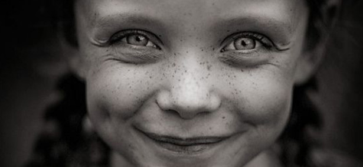

ANGER RIES WITHIN
ANGER RIES WITHIN
A MOMENT FILLED WITH JOY  JOY
ANGER RIES WITHIN
A DAY TOUCHED BY SADNESS
CALMNESS SETTLES IN
ANXIETY
SWIRLS AROUND
Welcome to the Emotion Typography website, where you can visually express your emotions through carefully Selected fonts, chose a feeling and discover how typography can bring you emotions to life in a creative and engaging way.